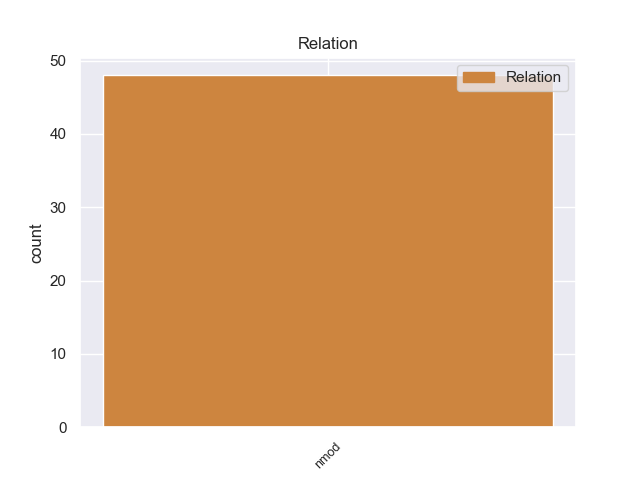
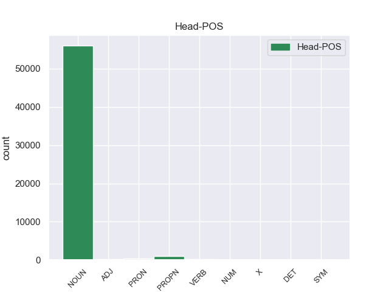
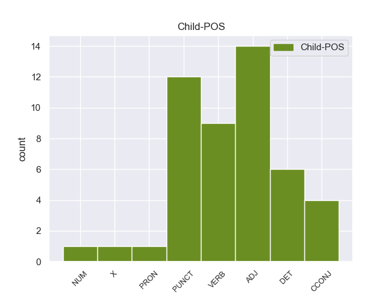

Distribution of features within this leaf



Agreement Rules sorted by frequency.
- When the dependent token is the nominal modifier(nmod) of the head token, and the head token is NOUN and the dependent token is ADJ.
1 Emula _ _ _ _ 0 _ _ _
2 casi _ _ _ _ 0 _ _ _
3 a _ _ _ _ 0 _ _ _
4 la _ _ _ _ 0 _ _ _
5 perfección _ _ _ _ 0 _ _ _
6 la _ _ _ _ 0 _ _ _
7 mayoría _ _ _ _ 0 _ _ _
8 de _ _ _ _ 0 _ _ _
9 sistemas sistemas NOUN _ Gender=Fem|Number=Sing 0 _ _ _
10 de _ _ _ _ 0 _ _ _
11 8 _ _ _ _ 0 _ _ _
12 bits _ _ _ _ 0 _ _ _
13 : _ _ _ _ 0 _ _ _
14 NES _ _ _ _ 0 _ _ _
15 , _ _ _ _ 0 _ _ _
16 Spectrum spectrum ADJ _ Gender=Fem|Number=Sing 9 nmod _ _
17 , _ _ _ _ 0 _ _ _
18 Sega _ _ _ _ 0 _ _ _
19 Master _ _ _ _ 0 _ _ _
20 System _ _ _ _ 0 _ _ _
21 y _ _ _ _ 0 _ _ _
22 Sega _ _ _ _ 0 _ _ _
23 Game _ _ _ _ 0 _ _ _
24 Gear _ _ _ _ 0 _ _ _
25 , _ _ _ _ 0 _ _ _
26 Game _ _ _ _ 0 _ _ _
27 Boy _ _ _ _ 0 _ _ _
28 ... _ _ _ _ 0 _ _ _
1 Destacan _ _ _ _ 0 _ _ _
2 veinte _ _ _ _ 0 _ _ _
3 lámparas _ _ _ _ 0 _ _ _
4 de _ _ _ _ 0 _ _ _
5 vidrio vidri VERB _ Gender=Masc|Number=Sing 14 nmod _ _
6 que _ _ _ _ 0 _ _ _
7 iluminaron _ _ _ _ 0 _ _ _
8 la _ _ _ _ 0 _ _ _
9 sinagoga _ _ _ _ 0 _ _ _
10 de _ _ _ _ 0 _ _ _
11 Lorca _ _ _ _ 0 _ _ _
12 , _ _ _ _ 0 _ _ _
13 varios _ _ _ _ 0 _ _ _
14 fragmentos fragmentos NOUN _ Gender=Masc|Number=Sing 0 _ _ _
15 de _ _ _ _ 0 _ _ _
16 las _ _ _ _ 0 _ _ _
17 yeserías _ _ _ _ 0 _ _ _
18 que _ _ _ _ 0 _ _ _
19 adornaban _ _ _ _ 0 _ _ _
20 la _ _ _ _ 0 _ _ _
21 pared _ _ _ _ 0 _ _ _
22 de _ _ _ _ 0 _ _ _
23 el _ _ _ _ 0 _ _ _
24 arón _ _ _ _ 0 _ _ _
25 ha _ _ _ _ 0 _ _ _
26 - _ _ _ _ 0 _ _ _
27 qodesh _ _ _ _ 0 _ _ _
28 este _ _ _ _ 0 _ _ _
29 edificio _ _ _ _ 0 _ _ _
30 , _ _ _ _ 0 _ _ _
31 azulejos _ _ _ _ 0 _ _ _
32 , _ _ _ _ 0 _ _ _
33 monedas _ _ _ _ 0 _ _ _
34 , _ _ _ _ 0 _ _ _
35 cerámicas _ _ _ _ 0 _ _ _
36 que _ _ _ _ 0 _ _ _
37 representan _ _ _ _ 0 _ _ _
38 la _ _ _ _ 0 _ _ _
39 vida _ _ _ _ 0 _ _ _
40 cotidiana _ _ _ _ 0 _ _ _
41 en _ _ _ _ 0 _ _ _
42 la _ _ _ _ 0 _ _ _
43 baja _ _ _ _ 0 _ _ _
44 Edad _ _ _ _ 0 _ _ _
45 Media _ _ _ _ 0 _ _ _
46 , _ _ _ _ 0 _ _ _
47 diversos _ _ _ _ 0 _ _ _
48 fragmentos _ _ _ _ 0 _ _ _
49 de _ _ _ _ 0 _ _ _
50 janukkiot _ _ _ _ 0 _ _ _
51 , _ _ _ _ 0 _ _ _
52 candiles _ _ _ _ 0 _ _ _
53 empleados _ _ _ _ 0 _ _ _
54 para _ _ _ _ 0 _ _ _
55 conmemorar _ _ _ _ 0 _ _ _
56 la _ _ _ _ 0 _ _ _
57 fiesta _ _ _ _ 0 _ _ _
58 judía _ _ _ _ 0 _ _ _
59 de _ _ _ _ 0 _ _ _
60 la _ _ _ _ 0 _ _ _
61 Januká _ _ _ _ 0 _ _ _
62 , _ _ _ _ 0 _ _ _
63 así _ _ _ _ 0 _ _ _
64 como _ _ _ _ 0 _ _ _
65 interesantes _ _ _ _ 0 _ _ _
66 manuscritos _ _ _ _ 0 _ _ _
67 que _ _ _ _ 0 _ _ _
68 recogen _ _ _ _ 0 _ _ _
69 las _ _ _ _ 0 _ _ _
70 actividades _ _ _ _ 0 _ _ _
71 de _ _ _ _ 0 _ _ _
72 los _ _ _ _ 0 _ _ _
73 judíos _ _ _ _ 0 _ _ _
74 que _ _ _ _ 0 _ _ _
75 formaban _ _ _ _ 0 _ _ _
76 parte _ _ _ _ 0 _ _ _
77 de _ _ _ _ 0 _ _ _
78 la _ _ _ _ 0 _ _ _
79 sociedad _ _ _ _ 0 _ _ _
80 fronteriza _ _ _ _ 0 _ _ _
81 de _ _ _ _ 0 _ _ _
82 Lorca _ _ _ _ 0 _ _ _
83 en _ _ _ _ 0 _ _ _
84 el _ _ _ _ 0 _ _ _
85 siglo _ _ _ _ 0 _ _ _
86 XV _ _ _ _ 0 _ _ _
87 . _ _ _ _ 0 _ _ _
1 Es _ _ _ _ 0 _ _ _
2 un _ _ _ _ 0 _ _ _
3 pequeño pequeño PUNCT _ Gender=Masc|Number=Sing 4 nmod _ _
4 hostal hostal NOUN _ Gender=Masc|Number=Sing 0 _ _ _
5 muy _ _ _ _ 0 _ _ _
6 bonito _ _ _ _ 0 _ _ _
7 , _ _ _ _ 0 _ _ _
8 tranquilo _ _ _ _ 0 _ _ _
9 , _ _ _ _ 0 _ _ _
10 limpio _ _ _ _ 0 _ _ _
11 y _ _ _ _ 0 _ _ _
12 familiar _ _ _ _ 0 _ _ _
13 . _ _ _ _ 0 _ _ _
1 El _ _ _ _ 0 _ _ _
2 primero _ _ _ _ 0 _ _ _
3 fue _ _ _ _ 0 _ _ _
4 el _ _ _ _ 0 _ _ _
5 Alpine alpine ADJ _ Gender=Masc|Number=Sing 0 _ _ _
6 Club _ _ _ _ 0 _ _ _
7 británico _ _ _ _ 0 _ _ _
8 , _ _ _ _ 0 _ _ _
9 fundado _ _ _ _ 0 _ _ _
10 en _ _ _ _ 0 _ _ _
11 el _ _ _ _ 0 _ _ _
12 invierno _ _ _ _ 0 _ _ _
13 de _ _ _ _ 0 _ _ _
14 1857-1858 _ _ _ _ 0 _ _ _
15 , _ _ _ _ 0 _ _ _
16 seguido _ _ _ _ 0 _ _ _
17 en _ _ _ _ 0 _ _ _
18 1862 _ _ _ _ 0 _ _ _
19 por _ _ _ _ 0 _ _ _
20 el _ _ _ _ 0 _ _ _
21 Club _ _ _ _ 0 _ _ _
22 Alpino _ _ _ _ 0 _ _ _
23 Austríaco _ _ _ _ 0 _ _ _
24 que _ _ _ _ 0 _ _ _
25 se _ _ _ _ 0 _ _ _
26 fusionó _ _ _ _ 0 _ _ _
27 en _ _ _ _ 0 _ _ _
28 1873 _ _ _ _ 0 _ _ _
29 , _ _ _ _ 0 _ _ _
30 bajo _ _ _ _ 0 _ _ _
31 el _ _ _ _ 0 _ _ _
32 nombre _ _ _ _ 0 _ _ _
33 de _ _ _ _ 0 _ _ _
34 Club _ _ _ _ 0 _ _ _
35 Alpino _ _ _ _ 0 _ _ _
36 Austro _ _ _ _ 0 _ _ _
37 - _ _ _ _ 0 _ _ _
38 Alemán _ _ _ _ 0 _ _ _
39 , _ _ _ _ 0 _ _ _
40 con _ _ _ _ 0 _ _ _
41 el _ _ _ _ 0 _ _ _
42 Club _ _ _ _ 0 _ _ _
43 Alpino _ _ _ _ 0 _ _ _
44 Alemán _ _ _ _ 0 _ _ _
45 ( _ _ _ _ 0 _ _ _
46 Deutscher _ _ _ _ 0 _ _ _
47 Alpenverein _ _ _ _ 0 _ _ _
48 ) _ _ _ _ 0 _ _ _
49 , _ _ _ _ 0 _ _ _
50 fundado _ _ _ _ 0 _ _ _
51 en _ _ _ _ 0 _ _ _
52 1869 _ _ _ _ 0 _ _ _
53 , _ _ _ _ 0 _ _ _
54 en _ _ _ _ 0 _ _ _
55 1863 _ _ _ _ 0 _ _ _
56 por _ _ _ _ 0 _ _ _
57 los _ _ _ _ 0 _ _ _
58 Clubes _ _ _ _ 0 _ _ _
59 Alpinos alpinos PUNCT _ Gender=Masc|Number=Sing 5 nmod _ _
60 Italiano _ _ _ _ 0 _ _ _
61 y _ _ _ _ 0 _ _ _
62 Suizo _ _ _ _ 0 _ _ _
63 , _ _ _ _ 0 _ _ _
64 y _ _ _ _ 0 _ _ _
65 en _ _ _ _ 0 _ _ _
66 1874 _ _ _ _ 0 _ _ _
67 por _ _ _ _ 0 _ _ _
68 el _ _ _ _ 0 _ _ _
69 Club _ _ _ _ 0 _ _ _
70 Alpino _ _ _ _ 0 _ _ _
71 Francés _ _ _ _ 0 _ _ _
72 , _ _ _ _ 0 _ _ _
73 por _ _ _ _ 0 _ _ _
74 no _ _ _ _ 0 _ _ _
75 mencionar _ _ _ _ 0 _ _ _
76 numerosas _ _ _ _ 0 _ _ _
77 sociedades _ _ _ _ 0 _ _ _
78 menores _ _ _ _ 0 _ _ _
79 de _ _ _ _ 0 _ _ _
80 carácter _ _ _ _ 0 _ _ _
81 más _ _ _ _ 0 _ _ _
82 local _ _ _ _ 0 _ _ _
83 . _ _ _ _ 0 _ _ _
1 Finalmente _ _ _ _ 0 _ _ _
2 Law _ _ _ _ 0 _ _ _
3 se _ _ _ _ 0 _ _ _
4 instaló _ _ _ _ 0 _ _ _
5 en _ _ _ _ 0 _ _ _
6 Francia _ _ _ _ 0 _ _ _
7 donde _ _ _ _ 0 _ _ _
8 fundó _ _ _ _ 0 _ _ _
9 el _ _ _ _ 0 _ _ _
10 Banque banque NOUN _ Gender=Masc|Number=Sing 0 _ _ _
11 Générale générale DET _ Gender=Masc|Number=Sing 10 nmod _ _
12 Privée _ _ _ _ 0 _ _ _
13 ( _ _ _ _ 0 _ _ _
14 " _ _ _ _ 0 _ _ _
15 Banco _ _ _ _ 0 _ _ _
16 General _ _ _ _ 0 _ _ _
17 Privado _ _ _ _ 0 _ _ _
18 " _ _ _ _ 0 _ _ _
19 ) _ _ _ _ 0 _ _ _
20 , _ _ _ _ 0 _ _ _
21 desde _ _ _ _ 0 _ _ _
22 el _ _ _ _ 0 _ _ _
23 cual _ _ _ _ 0 _ _ _
24 consiguió _ _ _ _ 0 _ _ _
25 forjar _ _ _ _ 0 _ _ _
26 importantes _ _ _ _ 0 _ _ _
27 vínculos _ _ _ _ 0 _ _ _
28 de _ _ _ _ 0 _ _ _
29 poder _ _ _ _ 0 _ _ _
30 . _ _ _ _ 0 _ _ _
1 En _ _ _ _ 0 _ _ _
2 2001 _ _ _ _ 0 _ _ _
3 , _ _ _ _ 0 _ _ _
4 Hawn _ _ _ _ 0 _ _ _
5 protagoniza _ _ _ _ 0 _ _ _
6 junto _ _ _ _ 0 _ _ _
7 a _ _ _ _ 0 _ _ _
8 Warren _ _ _ _ 0 _ _ _
9 Beatty _ _ _ _ 0 _ _ _
10 y _ _ _ _ 0 _ _ _
11 Diane _ _ _ _ 0 _ _ _
12 Keaton _ _ _ _ 0 _ _ _
13 la _ _ _ _ 0 _ _ _
14 película _ _ _ _ 0 _ _ _
15 Town town NOUN _ Gender=Fem|Number=Sing 0 _ _ _
16 & _ _ _ _ 0 _ _ _
17 Country country CCONJ _ Gender=Fem|Number=Sing 15 nmod _ _
18 ( _ _ _ _ 0 _ _ _
19 Enredos _ _ _ _ 0 _ _ _
20 de _ _ _ _ 0 _ _ _
21 sociedad _ _ _ _ 0 _ _ _
22 o _ _ _ _ 0 _ _ _
23 No _ _ _ _ 0 _ _ _
24 más _ _ _ _ 0 _ _ _
25 sexo _ _ _ _ 0 _ _ _
26 ) _ _ _ _ 0 _ _ _
27 . _ _ _ _ 0 _ _ _
1 En _ _ _ _ 0 _ _ _
2 2008 _ _ _ _ 0 _ _ _
3 , _ _ _ _ 0 _ _ _
4 un _ _ _ _ 0 _ _ _
5 acuerdo _ _ _ _ 0 _ _ _
6 fue _ _ _ _ 0 _ _ _
7 anunciado _ _ _ _ 0 _ _ _
8 , _ _ _ _ 0 _ _ _
9 posicionando _ _ _ _ 0 _ _ _
10 a _ _ _ _ 0 _ _ _
11 Ilumination _ _ _ _ 0 _ _ _
12 Entertainment _ _ _ _ 0 _ _ _
13 como _ _ _ _ 0 _ _ _
14 el _ _ _ _ 0 _ _ _
15 brazo _ _ _ _ 0 _ _ _
16 de _ _ _ _ 0 _ _ _
17 entretenimiento _ _ _ _ 0 _ _ _
18 familiar _ _ _ _ 0 _ _ _
19 de _ _ _ _ 0 _ _ _
20 NBC _ _ _ _ 0 _ _ _
21 , _ _ _ _ 0 _ _ _
22 que _ _ _ _ 0 _ _ _
23 produciría _ _ _ _ 0 _ _ _
24 de _ _ _ _ 0 _ _ _
25 una uno NUM _ Gender=Fem|Number=Sing|NumType=Card 28 nmod _ _
26 a _ _ _ _ 0 _ _ _
27 dos _ _ _ _ 0 _ _ _
28 películas película NOUN _ Gender=Fem|Number=Plur 0 _ _ _
29 a _ _ _ _ 0 _ _ _
30 el _ _ _ _ 0 _ _ _
31 año _ _ _ _ 0 _ _ _
32 a _ _ _ _ 0 _ _ _
33 partir _ _ _ _ 0 _ _ _
34 de _ _ _ _ 0 _ _ _
35 2010 _ _ _ _ 0 _ _ _
36 . _ _ _ _ 0 _ _ _
1 De _ _ _ _ 0 _ _ _
2 cualquier _ _ _ _ 0 _ _ _
3 manera _ _ _ _ 0 _ _ _
4 , _ _ _ _ 0 _ _ _
5 éste _ _ _ _ 0 _ _ _
6 la _ _ _ _ 0 _ _ _
7 cubrió _ _ _ _ 0 _ _ _
8 de _ _ _ _ 0 _ _ _
9 regalos _ _ _ _ 0 _ _ _
10 y _ _ _ _ 0 _ _ _
11 alquiló _ _ _ _ 0 _ _ _
12 para _ _ _ _ 0 _ _ _
13 ella _ _ _ _ 0 _ _ _
14 un _ _ _ _ 0 _ _ _
15 lujoso _ _ _ _ 0 _ _ _
16 entresuelo _ _ _ _ 0 _ _ _
17 en _ _ _ _ 0 _ _ _
18 el _ _ _ _ 0 _ _ _
19 Boulevard boulevard PROPN _ Gender=Masc|Number=Sing 0 _ _ _
20 de _ _ _ _ 0 _ _ _
21 la _ _ _ _ 0 _ _ _
22 Madeleine madeleine PUNCT _ Gender=Masc|Number=Sing 19 nmod _ _
23 dónde _ _ _ _ 0 _ _ _
24 Marie _ _ _ _ 0 _ _ _
25 , _ _ _ _ 0 _ _ _
26 interesada _ _ _ _ 0 _ _ _
27 profundamente _ _ _ _ 0 _ _ _
28 en _ _ _ _ 0 _ _ _
29 rodear _ _ _ _ 0 _ _ _
30 se _ _ _ _ 0 _ _ _
31 de _ _ _ _ 0 _ _ _
32 escritores _ _ _ _ 0 _ _ _
33 , _ _ _ _ 0 _ _ _
34 filósofos _ _ _ _ 0 _ _ _
35 , _ _ _ _ 0 _ _ _
36 poetas _ _ _ _ 0 _ _ _
37 , _ _ _ _ 0 _ _ _
38 actores _ _ _ _ 0 _ _ _
39 y _ _ _ _ 0 _ _ _
40 demás _ _ _ _ 0 _ _ _
41 genios _ _ _ _ 0 _ _ _
42 , _ _ _ _ 0 _ _ _
43 celebraba _ _ _ _ 0 _ _ _
44 asiduamente _ _ _ _ 0 _ _ _
45 cenas _ _ _ _ 0 _ _ _
46 que _ _ _ _ 0 _ _ _
47 derivaban _ _ _ _ 0 _ _ _
48 en _ _ _ _ 0 _ _ _
49 tertulias _ _ _ _ 0 _ _ _
50 literarias _ _ _ _ 0 _ _ _
51 y _ _ _ _ 0 _ _ _
52 que _ _ _ _ 0 _ _ _
53 lograron _ _ _ _ 0 _ _ _
54 reunir _ _ _ _ 0 _ _ _
55 a _ _ _ _ 0 _ _ _
56 personalidades _ _ _ _ 0 _ _ _
57 de _ _ _ _ 0 _ _ _
58 la _ _ _ _ 0 _ _ _
59 altura _ _ _ _ 0 _ _ _
60 de _ _ _ _ 0 _ _ _
61 Alexandre _ _ _ _ 0 _ _ _
62 Dumas _ _ _ _ 0 _ _ _
63 ( _ _ _ _ 0 _ _ _
64 padre _ _ _ _ 0 _ _ _
65 ) _ _ _ _ 0 _ _ _
66 , _ _ _ _ 0 _ _ _
67 Alfred _ _ _ _ 0 _ _ _
68 de _ _ _ _ 0 _ _ _
69 Musset _ _ _ _ 0 _ _ _
70 , _ _ _ _ 0 _ _ _
71 Eugène _ _ _ _ 0 _ _ _
72 Sue _ _ _ _ 0 _ _ _
73 o _ _ _ _ 0 _ _ _
74 Charles _ _ _ _ 0 _ _ _
75 Dickens _ _ _ _ 0 _ _ _
76 . _ _ _ _ 0 _ _ _
1 Afroguatteria afroguatteria PROPN _ Gender=Masc|Number=Sing 0 _ _ _
2 es _ _ _ _ 0 _ _ _
3 un _ _ _ _ 0 _ _ _
4 género _ _ _ _ 0 _ _ _
5 de _ _ _ _ 0 _ _ _
6 plantas _ _ _ _ 0 _ _ _
7 fanerógamas _ _ _ _ 0 _ _ _
8 con _ _ _ _ 0 _ _ _
9 dos _ _ _ _ 0 _ _ _
10 especies _ _ _ _ 0 _ _ _
11 perteneciente _ _ _ _ 0 _ _ _
12 a _ _ _ _ 0 _ _ _
13 la _ _ _ _ 0 _ _ _
14 familia _ _ _ _ 0 _ _ _
15 de _ _ _ _ 0 _ _ _
16 las _ _ _ _ 0 _ _ _
17 anonáceas anonáceas ADJ _ Gender=Masc|Number=Sing 1 nmod _ _
18 . _ _ _ _ 0 _ _ _
1 La _ _ _ _ 0 _ _ _
2 nube _ _ _ _ 0 _ _ _
3 Morning _ _ _ _ 0 _ _ _
4 Glory _ _ _ _ 0 _ _ _
5 ( _ _ _ _ 0 _ _ _
6 en _ _ _ _ 0 _ _ _
7 español _ _ _ _ 0 _ _ _
8 , _ _ _ _ 0 _ _ _
9 « _ _ _ _ 0 _ _ _
10 nube _ _ _ _ 0 _ _ _
11 de _ _ _ _ 0 _ _ _
12 gloria _ _ _ _ 0 _ _ _
13 por _ _ _ _ 0 _ _ _
14 la _ _ _ _ 0 _ _ _
15 mañana _ _ _ _ 0 _ _ _
16 » _ _ _ _ 0 _ _ _
17 o _ _ _ _ 0 _ _ _
18 a _ _ _ _ 0 _ _ _
19 veces _ _ _ _ 0 _ _ _
20 « _ _ _ _ 0 _ _ _
21 nube _ _ _ _ 0 _ _ _
22 enredadera _ _ _ _ 0 _ _ _
23 » _ _ _ _ 0 _ _ _
24 ) _ _ _ _ 0 _ _ _
25 es _ _ _ _ 0 _ _ _
26 un _ _ _ _ 0 _ _ _
27 fenómeno _ _ _ _ 0 _ _ _
28 meteorológico _ _ _ _ 0 _ _ _
29 poco _ _ _ _ 0 _ _ _
30 frecuente _ _ _ _ 0 _ _ _
31 que _ _ _ _ 0 _ _ _
32 puede _ _ _ _ 0 _ _ _
33 ser _ _ _ _ 0 _ _ _
34 observado observado DET _ Gender=Fem|Number=Plur 0 _ _ _
35 en _ _ _ _ 0 _ _ _
36 septiembre _ _ _ _ 0 _ _ _
37 y _ _ _ _ 0 _ _ _
38 octubre _ _ _ _ 0 _ _ _
39 a _ _ _ _ 0 _ _ _
40 el _ _ _ _ 0 _ _ _
41 sur _ _ _ _ 0 _ _ _
42 de _ _ _ _ 0 _ _ _
43 el _ _ _ _ 0 _ _ _
44 golfo golfo CCONJ _ Gender=Fem|Number=Sing 34 nmod _ _
45 de _ _ _ _ 0 _ _ _
46 Carpentaria _ _ _ _ 0 _ _ _
47 , _ _ _ _ 0 _ _ _
48 en _ _ _ _ 0 _ _ _
49 la _ _ _ _ 0 _ _ _
50 parte _ _ _ _ 0 _ _ _
51 norte _ _ _ _ 0 _ _ _
52 de _ _ _ _ 0 _ _ _
53 Australia _ _ _ _ 0 _ _ _
54 . _ _ _ _ 0 _ _ _
Disagree Examples:
1 Fui _ _ _ _ 0 _ _ _
2 el _ _ _ _ 0 _ _ _
3 año _ _ _ _ 0 _ _ _
4 pasado _ _ _ _ 0 _ _ _
5 y _ _ _ _ 0 _ _ _
6 de _ _ _ _ 0 _ _ _
7 la _ _ _ _ 0 _ _ _
8 ruta _ _ _ _ 0 _ _ _
9 de _ _ _ _ 0 _ _ _
10 los _ _ _ _ 0 _ _ _
11 7 _ _ _ _ 0 _ _ _
12 lagos _ _ _ _ 0 _ _ _
13 fue _ _ _ _ 0 _ _ _
14 el _ _ _ _ 0 _ _ _
15 que _ _ _ _ 0 _ _ _
16 más _ _ _ _ 0 _ _ _
17 me _ _ _ _ 0 _ _ _
18 gusto _ _ _ _ 0 _ _ _
19 , _ _ _ _ 0 _ _ _
20 en _ _ _ _ 0 _ _ _
21 el _ _ _ _ 0 _ _ _
22 mes _ _ _ _ 0 _ _ _
23 de _ _ _ _ 0 _ _ _
24 enero _ _ _ _ 0 _ _ _
25 y _ _ _ _ 0 _ _ _
26 febrero _ _ _ _ 0 _ _ _
27 te _ _ _ _ 0 _ _ _
28 dan _ _ _ _ 0 _ _ _
29 la _ _ _ _ 0 _ _ _
30 cena _ _ _ _ 0 _ _ _
31 gratis _ _ _ _ 0 _ _ _
32 y _ _ _ _ 0 _ _ _
33 podes _ _ _ _ 0 _ _ _
34 hacer _ _ _ _ 0 _ _ _
35 un _ _ _ _ 0 _ _ _
36 montón _ _ _ _ 0 _ _ _
37 de _ _ _ _ 0 _ _ _
38 excursiones _ _ _ _ 0 _ _ _
39 organisadas organisado X _ Gender=Fem|Number=Plur|VerbForm=Part 0 _ _ _
40 en _ _ _ _ 0 _ _ _
41 el _ _ _ _ 0 _ _ _
42 mismo _ _ _ _ 0 _ _ _
43 hostel hostel X _ Gender=Masc|Number=Sing 39 nmod _ SpaceAfter=No
44 . _ _ _ _ 0 _ _ _
1 Hola _ _ _ _ 0 _ _ _
2 , _ _ _ _ 0 _ _ _
3 soy _ _ _ _ 0 _ _ _
4 decoradora _ _ _ _ 0 _ _ _
5 de _ _ _ _ 0 _ _ _
6 interiores _ _ _ _ 0 _ _ _
7 y _ _ _ _ 0 _ _ _
8 después _ _ _ _ 0 _ _ _
9 de _ _ _ _ 0 _ _ _
10 trabajar _ _ _ _ 0 _ _ _
11 con _ _ _ _ 0 _ _ _
12 muchas _ _ _ _ 0 _ _ _
13 empresas _ _ _ _ 0 _ _ _
14 de _ _ _ _ 0 _ _ _
15 cocinas _ _ _ _ 0 _ _ _
16 conocí _ _ _ _ 0 _ _ _
17 a _ _ _ _ 0 _ _ _
18 la _ _ _ _ 0 _ _ _
19 gente _ _ _ _ 0 _ _ _
20 de _ _ _ _ 0 _ _ _
21 Cinalux _ _ _ _ 0 _ _ _
22 por _ _ _ _ 0 _ _ _
23 medio medio NOUN _ Gender=Masc|Number=Sing 0 _ _ _
24 de _ _ _ _ 0 _ _ _
25 una uno PRON _ Gender=Fem|Number=Sing|PronType=Ind 23 nmod _ _
26 de _ _ _ _ 0 _ _ _
27 mis _ _ _ _ 0 _ _ _
28 clientas _ _ _ _ 0 _ _ _
29 . _ _ _ _ 0 _ _ _
1 Se _ _ _ _ 0 _ _ _
2 trata trata VERB _ Gender=Fem|Number=Sing 0 _ _ _
3 de _ _ _ _ 0 _ _ _
4 pasta _ _ _ _ 0 _ _ _
5 de _ _ _ _ 0 _ _ _
6 arroz _ _ _ _ 0 _ _ _
7 ( _ _ _ _ 0 _ _ _
8 riso _ _ _ _ 0 _ _ _
9 ) _ _ _ _ 0 _ _ _
10 y _ _ _ _ 0 _ _ _
11 azafrán _ _ _ _ 0 _ _ _
12 ligado _ _ _ _ 0 _ _ _
13 con _ _ _ _ 0 _ _ _
14 parmesano _ _ _ _ 0 _ _ _
15 o _ _ _ _ 0 _ _ _
16 pecorino _ _ _ _ 0 _ _ _
17 y _ _ _ _ 0 _ _ _
18 huevo _ _ _ _ 0 _ _ _
19 para _ _ _ _ 0 _ _ _
20 ser _ _ _ _ 0 _ _ _
21 posteriormente _ _ _ _ 0 _ _ _
22 frita frita VERB _ Gender=Masc|Number=Sing 2 nmod _ _
23 en _ _ _ _ 0 _ _ _
24 aceite _ _ _ _ 0 _ _ _
25 de _ _ _ _ 0 _ _ _
26 oliva _ _ _ _ 0 _ _ _
27 , _ _ _ _ 0 _ _ _
28 o _ _ _ _ 0 _ _ _
29 menos _ _ _ _ 0 _ _ _
30 común _ _ _ _ 0 _ _ _
31 : _ _ _ _ 0 _ _ _
32 introducida _ _ _ _ 0 _ _ _
33 a _ _ _ _ 0 _ _ _
34 el _ _ _ _ 0 _ _ _
35 horno _ _ _ _ 0 _ _ _
36 " _ _ _ _ 0 _ _ _
37 a _ _ _ _ 0 _ _ _
38 el _ _ _ _ 0 _ _ _
39 forno _ _ _ _ 0 _ _ _
40 " _ _ _ _ 0 _ _ _
41 , _ _ _ _ 0 _ _ _
42 suelen _ _ _ _ 0 _ _ _
43 tener _ _ _ _ 0 _ _ _
44 forma _ _ _ _ 0 _ _ _
45 de _ _ _ _ 0 _ _ _
46 bolas _ _ _ _ 0 _ _ _
47 de _ _ _ _ 0 _ _ _
48 diámetro _ _ _ _ 0 _ _ _
49 de _ _ _ _ 0 _ _ _
50 8-10 _ _ _ _ 0 _ _ _
51 cm _ _ _ _ 0 _ _ _
52 , _ _ _ _ 0 _ _ _
53 en _ _ _ _ 0 _ _ _
54 su _ _ _ _ 0 _ _ _
55 interior _ _ _ _ 0 _ _ _
56 pueden _ _ _ _ 0 _ _ _
57 llevar _ _ _ _ 0 _ _ _
58 ragù _ _ _ _ 0 _ _ _
59 , _ _ _ _ 0 _ _ _
60 u _ _ _ _ 0 _ _ _
61 otros _ _ _ _ 0 _ _ _
62 ingredientes _ _ _ _ 0 _ _ _
63 elaborados _ _ _ _ 0 _ _ _
64 con _ _ _ _ 0 _ _ _
65 salsa _ _ _ _ 0 _ _ _
66 de _ _ _ _ 0 _ _ _
67 tomate _ _ _ _ 0 _ _ _
68 , _ _ _ _ 0 _ _ _
69 mozzarella _ _ _ _ 0 _ _ _
70 , _ _ _ _ 0 _ _ _
71 guisantes _ _ _ _ 0 _ _ _
72 , _ _ _ _ 0 _ _ _
73 etc. _ _ _ _ 0 _ _ _
1 Para _ _ _ _ 0 _ _ _
2 construir _ _ _ _ 0 _ _ _
3 una _ _ _ _ 0 _ _ _
4 gráfica _ _ _ _ 0 _ _ _
5 de _ _ _ _ 0 _ _ _
6 matriz _ _ _ _ 0 _ _ _
7 de _ _ _ _ 0 _ _ _
8 puntos _ _ _ _ 0 _ _ _
9 , _ _ _ _ 0 _ _ _
10 las _ _ _ _ 0 _ _ _
11 dos _ _ _ _ 0 _ _ _
12 secuencias _ _ _ _ 0 _ _ _
13 se _ _ _ _ 0 _ _ _
14 colocan _ _ _ _ 0 _ _ _
15 a _ _ _ _ 0 _ _ _
16 lo _ _ _ _ 0 _ _ _
17 largo _ _ _ _ 0 _ _ _
18 de _ _ _ _ 0 _ _ _
19 la _ _ _ _ 0 _ _ _
20 fila _ _ _ _ 0 _ _ _
21 superior _ _ _ _ 0 _ _ _
22 y _ _ _ _ 0 _ _ _
23 de _ _ _ _ 0 _ _ _
24 la _ _ _ _ 0 _ _ _
25 columna _ _ _ _ 0 _ _ _
26 que _ _ _ _ 0 _ _ _
27 está _ _ _ _ 0 _ _ _
28 más _ _ _ _ 0 _ _ _
29 a _ _ _ _ 0 _ _ _
30 la _ _ _ _ 0 _ _ _
31 izquierda _ _ _ _ 0 _ _ _
32 de _ _ _ _ 0 _ _ _
33 la _ _ _ _ 0 _ _ _
34 matriz _ _ _ _ 0 _ _ _
35 de _ _ _ _ 0 _ _ _
36 dos _ _ _ _ 0 _ _ _
37 dimensiones _ _ _ _ 0 _ _ _
38 y _ _ _ _ 0 _ _ _
39 se _ _ _ _ 0 _ _ _
40 coloca coloca VERB _ Definite=Def|Gender=Masc|Number=Sing|PronType=Art 0 _ _ _
41 un _ _ _ _ 0 _ _ _
42 punto _ _ _ _ 0 _ _ _
43 en _ _ _ _ 0 _ _ _
44 cualquier _ _ _ _ 0 _ _ _
45 lugar _ _ _ _ 0 _ _ _
46 en _ _ _ _ 0 _ _ _
47 el _ _ _ _ 0 _ _ _
48 que _ _ _ _ 0 _ _ _
49 los _ _ _ _ 0 _ _ _
50 caracteres _ _ _ _ 0 _ _ _
51 en _ _ _ _ 0 _ _ _
52 las _ _ _ _ 0 _ _ _
53 columnas _ _ _ _ 0 _ _ _
54 correspondientes _ _ _ _ 0 _ _ _
55 coincidan coincidan ADJ _ Gender=Fem|Number=Sing 40 nmod _ _
56 ( _ _ _ _ 0 _ _ _
57 esta _ _ _ _ 0 _ _ _
58 es _ _ _ _ 0 _ _ _
59 una _ _ _ _ 0 _ _ _
60 típica _ _ _ _ 0 _ _ _
61 gráfica _ _ _ _ 0 _ _ _
62 recurrente _ _ _ _ 0 _ _ _
63 ) _ _ _ _ 0 _ _ _
64 . _ _ _ _ 0 _ _ _
1 -- _ _ _ _ 0 _ _ _
2 Los _ _ _ _ 0 _ _ _
3 perros _ _ _ _ 0 _ _ _
4 de _ _ _ _ 0 _ _ _
5 mi _ _ _ _ 0 _ _ _
6 vecina _ _ _ _ 0 _ _ _
7 ( _ _ _ _ 0 _ _ _
8 la _ _ _ _ 0 _ _ _
9 de _ _ _ _ 0 _ _ _
10 el _ _ _ _ 0 _ _ _
11 cuarto _ _ _ _ 0 _ _ _
12 ) _ _ _ _ 0 _ _ _
13 , _ _ _ _ 0 _ _ _
14 los _ _ _ _ 0 _ _ _
15 nietos _ _ _ _ 0 _ _ _
16 de _ _ _ _ 0 _ _ _
17 mi _ _ _ _ 0 _ _ _
18 vecino _ _ _ _ 0 _ _ _
19 ( _ _ _ _ 0 _ _ _
20 el _ _ _ _ 0 _ _ _
21 de _ _ _ _ 0 _ _ _
22 el _ _ _ _ 0 _ _ _
23 ático _ _ _ _ 0 _ _ _
24 ) _ _ _ _ 0 _ _ _
25 , _ _ _ _ 0 _ _ _
26 los _ _ _ _ 0 _ _ _
27 tirones tirones NOUN _ Gender=Fem|Number=Sing 0 _ _ _
28 de _ _ _ _ 0 _ _ _
29 el _ _ _ _ 0 _ _ _
30 fisioterapeuta _ _ _ _ 0 _ _ _
31 que _ _ _ _ 0 _ _ _
32 me _ _ _ _ 0 _ _ _
33 rehabilita _ _ _ _ 0 _ _ _
34 , _ _ _ _ 0 _ _ _
35 la _ _ _ _ 0 _ _ _
36 musiquilla _ _ _ _ 0 _ _ _
37 de _ _ _ _ 0 _ _ _
38 los _ _ _ _ 0 _ _ _
39 colegiales _ _ _ _ 0 _ _ _
40 de _ _ _ _ 0 _ _ _
41 San _ _ _ _ 0 _ _ _
42 Ildefonso _ _ _ _ 0 _ _ _
43 cuando _ _ _ _ 0 _ _ _
44 cantan _ _ _ _ 0 _ _ _
45 los _ _ _ _ 0 _ _ _
46 premios _ _ _ _ 0 _ _ _
47 de _ _ _ _ 0 _ _ _
48 una _ _ _ _ 0 _ _ _
49 lotería lotería PUNCT _ Gender=Masc|Number=Sing 27 nmod _ _
50 que _ _ _ _ 0 _ _ _
51 no _ _ _ _ 0 _ _ _
52 sé _ _ _ _ 0 _ _ _
53 a _ _ _ _ 0 _ _ _
54 quién _ _ _ _ 0 _ _ _
55 coño _ _ _ _ 0 _ _ _
56 toca _ _ _ _ 0 _ _ _
57 . _ _ _ _ 0 _ _ _